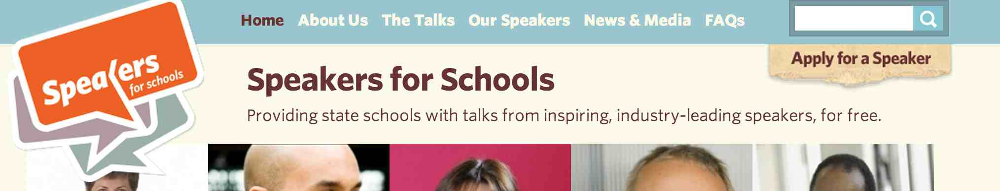

I am always very happy to give talks at Schools. I tend to focus on the area surrounding Sheffield for obvious reasons but I am happy to give talks wherever I am during my frequent travels. I have just given a talk in Sydney Australia.
I am part of
Speakers for Schools, an initiative that provides "free talks in state schools by distinguished and eminent people, including leaders in business, the arts, sciences, sport, politics and media".
I have given the following talks:
Topics
Different titles are available. Currently I am quite fond of the following ones:
-
Are you preparing for a Digital World? (see outline)
-
Jets, Music Festivals, and Flying Drones. And you thought computing was boring? (see outline)
Why Me?
I have a long and successful experience in both research and application.
I have worked both in industry and academia.
I have coordinated three multi-million European research programmes.
I have created two successful companies, one of which is now a multi-million company.
I was director of research and innovation for the Digital World for The University of Sheffield (2009-2012).
In 2006-2012 I have obtained research funds topping £6.5m, 10% of which from industry.
Some of the systems my group has developed are now used by thousands of users.
I am a very experienced speaker, having given over 30 talks and tutorials at international venues in the last years.
In 2011-2012 I received a Faculty of Engineering Award for Teaching Excellence, voted by the final year students as one of the most inspirational lecturers in their degree course.
I have chaired international events such as the European Semantic Web Conference in 2009.
See my
bio page for further information.
A word of warning: I am dyslexic. This is why there are mistakes on these pages. Although I try to pay the maximum attention to the quality of what I write, it can't be helped. The mistakes creep up. If this is a problem for your school, you may want to look for another speaker.
Target Audience
These talks are targeted at high schools, both GCSE students and Sixth Formers. In general they are appropriate to students who are in the process of deciding about their future studies (A-levels and University).
Requesting a Talk
If you are interested in one of my talks, please contact me at
f.ciravegna@shef.ac.uk.
And before you ask, it is free. It won't cost your school a penny.